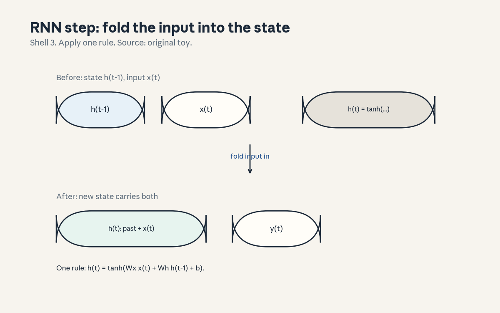
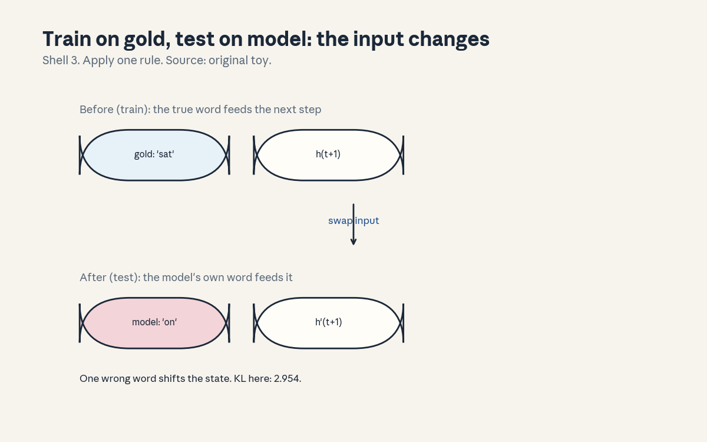
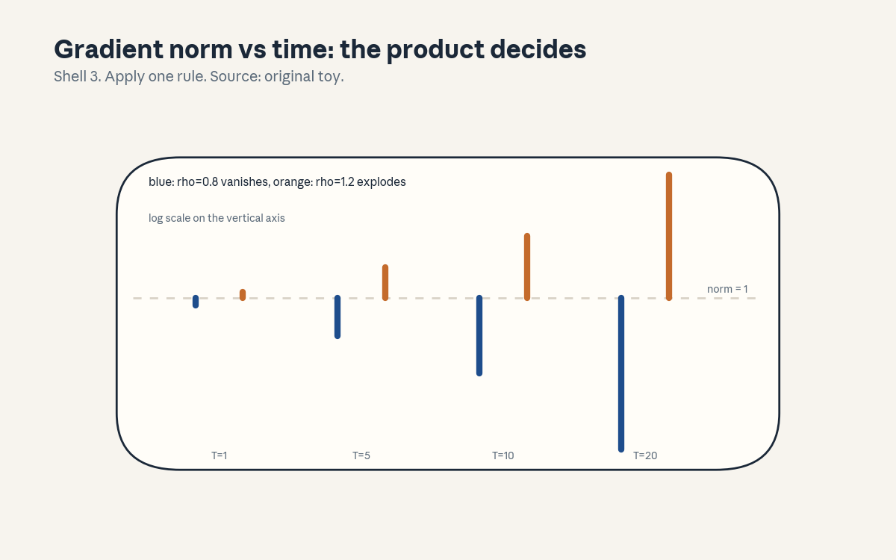

U04 · Language models and recurrence
U04 , Language models and recurrence
Prerequisites: P11, P13. Bridge links in prerequisites.md.
Session: S05 (Winter 2026: Thu Jan 15, Language Models and RNNs).
Claim class: OFFICIAL-SOURCE for the session title and reading list
(vanishing gradient papers, Attention Is All You Need, SRC-02),
REQUESTED-BRANCH for the concept inventory. All leaves: PLANNED /
SOURCE ATTRIBUTION PENDING unless noted. Notation: see
notation_and_shapes.md. Figures:

through
, rendered byvisuals/compute_u04.py
(executed 2026-10-06, CPython 3, numpy 1.26.4).
Local remediation , teacher forcing and perplexity
Read this block first if the diagnostic items D6 or D7 were not full marks.
Teacher forcing: during training, the model predicts word t+1 from the true prefix w_1..w_t. The inputs are gold, the model never sees its own mistakes. At test time the gold prefix is gone, so the model feeds its own predictions back in. The train/test mismatch is called exposure bias.
Perplexity: exp of the mean negative log-likelihood per word. The
toy RNN below reaches training loss 0.2824, so its training
perplexity is exp(0.2824) = 1.326: barely more than one effective
choice per word on training data. Do not compare this number with
any other model’s perplexity unless the tokenization matches.
Assessment: if a model assigns probability 0.5 to each correct word,
what is its perplexity? Key: keys/u04_answers.md R1.
C01: chain rule (the LM factorization)
Leaf id cs224n-U04-C01. Claim class REQUESTED-BRANCH.
Status PLANNED / SOURCE ATTRIBUTION PENDING.
-
Source mapping, scope, objectives, dependencies. Maps to S05 and back to U01 C07. Scope: the probability factorization every later unit assumes. Objectives: write the factorization, explain why it makes training parallel and generation serial, compute a toy likelihood. Depends on P06 (conditional probability).
-
Motivating question and toy. Question: how do you assign a probability to a whole sentence? Toy: P(the, cat, sat) = P(the) x P(cat | the) x P(sat | the, cat). Three small predictions compose into one sentence score. No independence assumed.
-
Mental model. The chain rule turns a joint distribution into a sequence of next-word bets. Training: all bets are placed at once (the full sentence is known). Generation: bets are placed one at a time, each depending on the last. This asymmetry, parallel training vs serial generation, shapes every LM system.
-
Objects, symbols, units, shapes, assumptions. Sequence w_1..w_n. P(w_1..w_n) = product_t P(w_t | w_{<t}). Log-likelihood: sum of log terms. Assumption: none about independence, the approximation lives inside each P(w_t | prefix), which the model must compress.
-
Derivation / mechanism. The chain rule is exact: P(A, B) = P(A) P(B | A), applied n - 1 times. The mechanism that matters: the log turns the product into a sum, so the total loss is a sum of per-position losses. Every position contributes equally, no position is special.
-
Computed example. Toy bigram numbers from U01: P(the) = 11/35 = 0.314, P(cat | the) = 0.24 (smoothed), P(sat | cat) = 0.158 (smoothed). Log-likelihood of “the cat sat” = log 0.314 + log 0.24 + log 0.158 = -1.158 - 1.427 - 1.845 = -4.430. Perplexity = exp(4.430/3) = 4.38. (Hand-computed from script counts, labeled as such.)
-
Algorithm and reference implementation.
seq_logprob(seq, model): sum of log P(w_t | prefix).seq_ppl: exp of the mean. ~10 lines on top of any next-word scorer. -
Correctness checks and expected output. Match -4.430 and 4.38 on the toy. Check: shuffling the words changes the score (order matters). Check: the empty prefix term P(w_1) uses the unigram.
-
Complexity, memory, statistical efficiency, stability, practical costs. Scoring a sequence: n forward passes (or one batched pass). The statistical cost: long prefixes are rare, so their conditionals are poorly estimated, every LM is a fight against this sparsity.
-
Nearest alternatives and selection boundaries. Alternative: masked/bidirectional factorization (U06): predict missing words from both sides. Choose autoregressive when the task generates text left to right. Choose bidirectional when the task reads whole inputs (classification, QA over a passage).
-
Failure case, broken assumption, counterexample. Broken assumption: “the factorization handles any order.” Counterexample: train left-to-right, then ask for the middle word given both sides: the model cannot use the right side. The factorization fixes the information flow, changing the task needs a new factorization.
-
Research reading and falsifiable extension. Falsifiable extension: train identical models left-to-right and right-to-left on the same corpus and compare perplexity. Predict: near-equal (the chain rule is symmetric in principle). Falsifier: large gap (points to an implementation asymmetry worth finding).
-
Breadth recall, deep oral ladder, unfamiliar transfer. Assessment block:
keys/u04_answers.mdA1 (breadth), L1 (ladder: write the factorization, compute the toy, derive the sum form, explain the order failure, design the direction test). -
Lab/exercises with answers separated. E1: implement
seq_logprob, match -4.430. E2: show that reversing the toy sentence changes the bigram score. Keys inkeys/u04_answers.md. -
Visual units, provenance, accessibility, audit row. Claim is a factorization (a procedure), the numbers are carried in text. Logged as an honest exception in
visual_audit.md.
C02: teacher forcing
Leaf id cs224n-U04-C02. Claim class REQUESTED-BRANCH.
Status PLANNED / SOURCE ATTRIBUTION PENDING.
-
Source mapping, scope, objectives, dependencies. Maps to S05 and to P13. Scope: the training trick and its price. Objectives: define teacher forcing, define exposure bias, measure the gap on the toy. Depends on C01 and the remediation block.
-
Motivating question and toy. Question: training feeds the model perfect prefixes, what happens when the perfection stops? Toy: at step t = 2 of “the cat sat …”, training feeds “sat” (gold). Free running feeds the model’s own prediction “on”. The next state differs, and the KL between the two next-word distributions is 2.9543 (computed).
-
Mental model. Teacher forcing is like training wheels: the model always rides on the true path, so it never learns to recover from its own errors. At test time the wheels come off. Exposure bias is the resulting drift: small errors compound because the model visits states it never saw in training.
-
Objects, symbols, units, shapes, assumptions. Training input at step t: w_t (gold). Test input: ŵ_t (model’s sample). Assumption: the model’s errors are small enough that the drift stays manageable. This holds for good models on short sequences and breaks otherwise.
-
Derivation / mechanism. The loss only ever evaluates P(w_{t+1} | gold prefix). The test distribution is P(w_{t+1} | model prefix). These are different distributions, minimizing the first does not minimize the second. The gap grows with sequence length: each step’s error shifts the state, and the shift accumulates.
-
Computed example. From
compute_u04.py: at t = 2, forced input “sat” vs free input “on” (the model’s argmax). KL(forced || free) = 2.9543 nats: the two next-word distributions barely overlap. shows the input swap. One wrong word, one shifted state, one large KL. -
Algorithm and reference implementation.
free_run(model, seed, n): feed argmax (or sample) back for n steps.forced_run(model, seq): feed gold. Compare the two distributions at each step with KL. ~15 lines. -
Correctness checks and expected output. KL 2.9543 on the toy step. Check: with a perfect model (argmax always correct), KL =
-
Check: KL is non-negative and asymmetric, report the direction.
-
Complexity, memory, statistical efficiency, stability, practical costs. Teacher forcing trains in parallel over positions (fast). Free running is serial (slow). The cost of the mismatch is paid at deployment: degraded long generations. Mitigations: scheduled sampling (mix gold and model inputs during training), beam search, or simply short outputs.
-
Nearest alternatives and selection boundaries. Alternative: scheduled sampling (anneal from gold to model inputs). Choose pure teacher forcing for stable, fast training (the default). Choose scheduled sampling when long free-run quality matters and you can afford the instability. Choose RL fine-tuning (U07) when the task has a reward for whole sequences.
-
Failure case, broken assumption, counterexample. Broken assumption: “low training loss means good generation.” Counterexample: the toy RNN has a training perplexity of 1.326 (excellent) yet its free-run KL at one step is 2.95 nats (the distributions diverge). Training loss measures forced performance, generation needs free-run evaluation.
-
Research reading and falsifiable extension. Falsifiable extension: train with teacher forcing vs scheduled sampling on the toy corpus and compare free-run accuracy at length 10. Predict: scheduled sampling wins on long runs, ties on short. Falsifier: teacher forcing wins everywhere (then the toy is too easy to show the bias).
-
Breadth recall, deep oral ladder, unfamiliar transfer. Assessment block:
keys/u04_answers.mdA2 (breadth), L2 (ladder: define both modes, compute the KL, derive the distribution mismatch, diagnose the 1.326-vs-2.95 paradox, design the scheduled-sampling test). -
Lab/exercises with answers separated. E3: implement
free_run, reproduce KL 2.9543 at t = 2. E4: find the first step where free-run argmax differs from gold on each toy sentence. Keys inkeys/u04_answers.md. -
Visual units, provenance, accessibility, audit row. : gold input vs model input, one rule (“swap input”), Shell 3, source original toy. Audit row in
visual_audit.md.
C03: perplexity
Leaf id cs224n-U04-C03. Claim class REQUESTED-BRANCH.
Status PLANNED / SOURCE ATTRIBUTION PENDING.
-
Source mapping, scope, objectives, dependencies. Maps to S05 and to U01 C07 (deeper treatment). Scope: the number, its meaning, and its limits. Objectives: compute it, read it as effective choices, list three ways it misleads. Depends on P08 (entropy) and the remediation block.
-
Motivating question and toy. Question: the RNN reports loss 0.2824, is that good? Toy: perplexity = exp(0.2824) = 1.326. On the training sentences, the model is nearly certain. The number is excellent and almost meaningless: it is the perplexity measured on the training data, six sentences.
-
Mental model. Perplexity is the size of the model’s confusion: 1.326 means “as confused as choosing among 1.3 equally likely words.” Uniform over V gives perplexity V. A model that memorizes training text gets perplexity near 1. The number measures fit to the evaluated distribution, nothing more.
-
Objects, symbols, units, shapes, assumptions. H: mean negative log-likelihood, nats. Perplexity = exp(H). Dimensionless. Assumption: the evaluated text comes from the target distribution, leakage (U01 C09) breaks the reading.
-
Derivation / mechanism. If P(w_t | prefix) = 1/k for all t, H = log k, perplexity = k. In general, perplexity is the geometric mean of 1/P(w_t | prefix): the average inverse probability. Lower means the model put more mass on what actually came next.
-
Computed example. From
compute_u04.py: train loss 0.2824, perplexity 1.326. Compare the U01 bigram: 5.137 on “the cat sat”. The RNN beats the bigram on its training data, as expected: it has far more capacity and the same six sentences to memorize. -
Algorithm and reference implementation.
perplexity(model, seqs): mean NLL over all positions, exp. Must exclude padding (C09). ~8 lines. -
Correctness checks and expected output. Match 1.326 on the toy training run. Check: perplexity >= 1 always. Check: doubling the test set does not change it (it is a mean).
-
Complexity, memory, statistical efficiency, stability, practical costs. One forward pass per position. The statistical cost is variance: perplexity on 6 sentences is noise, on 6 million it is a measurement. Report the test size with the number.
-
Nearest alternatives and selection boundaries. Alternative: bits per byte/character (tokenizer-independent), accuracy@k, human eval. Choose perplexity for quick model comparison on a fixed tokenizer. Choose bits-per-byte when tokenizers differ. Choose human eval when the decision matters.
-
Failure case, broken assumption, counterexample. Broken assumption: “lower perplexity = better model.” Three breaks: (a) memorization (1.326 on training proves nothing), (b) tokenizer mismatch (finer tokens inflate the count), (c) the task gap (great perplexity, poor free-run, C02). The number is a filter, not a verdict.
-
Research reading and falsifiable extension. Falsifiable extension: compute train vs held-out perplexity for the toy RNN. Predict: held-out is much worse (memorization). Falsifier: equal (then the toy generalizes, which would be unexpected and worth understanding).
-
Breadth recall, deep oral ladder, unfamiliar transfer. Assessment block:
keys/u04_answers.mdA3 (breadth), L3 (ladder: define it, compute 1.326, derive the uniform case, diagnose the three breaks, design the held-out test). -
Lab/exercises with answers separated. E5: implement
perplexity, match 1.326. E6: show that a model with constant P = 0.5 per word has perplexity exactly 2. Keys inkeys/u04_answers.md. -
Visual units, provenance, accessibility, audit row. Claim is a computed score, the 1.326 is carried in text. Logged as an honest exception in
visual_audit.md.
C04: RNN state
Leaf id cs224n-U04-C04. Claim class REQUESTED-BRANCH.
Status PLANNED / SOURCE ATTRIBUTION PENDING.
-
Source mapping, scope, objectives, dependencies. Maps to S05. Scope: the recurrent state as memory. Objectives: write the update, state the shapes, unroll three steps by hand. Depends on P11 (recurrent state in the bridge) and C01.
-
Motivating question and toy. Question: how does a fixed-size network read an unbounded sentence? Toy: h_t = tanh(W_x x_t + W_h h_{t-1} + b). The state h_t is a fixed d-dim vector that must summarize the entire prefix. Everything the model knows about the past lives in those d numbers.
-
Mental model. The state is a running summary. Each step folds the new word in and squeezes the result through tanh. The squeeze keeps values bounded but also crushes information: d numbers cannot hold n words losslessly. The state is a lossy compressor, and its capacity is the model’s memory.
-
Objects, symbols, units, shapes, assumptions. x_t: (d,) input embedding. h_t: (d,) state. W_x: (d, d) here (embedding dim = hidden dim in the toy), W_h: (d, d), b: (d,). Output: y_t = softmax(W_y h_t + b_y), W_y: (d, V). Assumption: the same matrices at every step (weight tying over time), this is what makes it recurrent.
-
Derivation / mechanism. Unrolling: h_1 = f(x_1, h_0), h_2 = f(x_2, h_1), … The network over time is a deep feedforward net with tied weights. Gradients flow back through the unrolled steps (C05). The tying is the point: one set of weights works for any length.
-
Computed example. Toy (hand-unrolled, labeled as such): d = 2, W_x = I, W_h = 0.5 I, b = 0, x_1 = (1, 0), x_2 = (0, 1), h_0 = (0, 0). h_1 = tanh((1,0)) = (0.762, 0) (exact 0.7616). h_2 = tanh((0,1) + 0.5(0.7616, 0)) = tanh((0.3808, 1)) = (0.363, 0.762). The state carries a decayed trace of x_1 into step 2.
-
Algorithm and reference implementation.
rnn_step(x, h, Wx, Wh, b),rnn_forward(seq, ...): loop, collect states. ~12 lines. Must reproduce the hand unroll. -
Correctness checks and expected output. Match (0.363, 0.762) at step 2. Check: h_t shape is (d,) for every t. Check: with W_h = 0 the state has no memory (h_t depends only on x_t).
-
Complexity, memory, statistical efficiency, stability, practical costs. Per step O(d^2). Total O(n d^2), serial over n (cannot parallelize across time). Memory O(n d) to keep states for BPTT. The serial cost is why transformers (U05) replaced RNNs at scale.
-
Nearest alternatives and selection boundaries. Alternative: feedforward with fixed window (no state), attention (U05, no recurrence). Choose RNN when the sequence is processed online and the state is a natural fit (streaming). Choose attention when training speed and long-range access matter more.
-
Failure case, broken assumption, counterexample. Broken assumption: “the state remembers everything.” Counterexample: d = 2, n = 100: the state cannot hold 100 words, early words are crushed by repeated tanh squeezes. The failure is structural (C06 quantifies it). Longer sequences need larger d or a different architecture.
-
Research reading and falsifiable extension. Falsifiable extension: train the toy RNN at d in {2, 8, 32} and measure accuracy on the last word of length-10 vs length-3 sequences. Predict: small d fails the long sequences first. Falsifier: d = 2 handles length 10 (then the task was too easy).
-
Breadth recall, deep oral ladder, unfamiliar transfer. Assessment block:
keys/u04_answers.mdA4 (breadth), L4 (ladder: write the update, unroll the toy, derive the tying, diagnose the d=2/n=100 crush, design the d sweep). -
Lab/exercises with answers separated. E7: implement
rnn_step/rnn_forward, match the hand unroll. E8: verify that W_h = 0 kills memory (h_2 independent of x_1). Keys inkeys/u04_answers.md. -
Visual units, provenance, accessibility, audit row. : one step, before/after state, one rule (“fold input in”), Shell 3, source original toy. Audit row in
visual_audit.md.
C05: BPTT
Leaf id cs224n-U04-C05. Claim class REQUESTED-BRANCH.
Status PLANNED / SOURCE ATTRIBUTION PENDING.
-
Source mapping, scope, objectives, dependencies. Maps to S05 (the vanishing-gradient readings motivate it). Scope: backpropagation through time. Objectives: unroll, write the gradient sum over time, state the truncation choice. Depends on C04 and U03 C01.
-
Motivating question and toy. Question: the loss at step 10 depends on W_h through all 10 steps, how does the gradient reach step 1? Toy: dL/dW_h = sum_{t=1..10} dL_t/dW_h, where each term flows back through the unrolled chain from t to the start. Every step contributes, early steps contribute through long chains.
-
Mental model. Unroll the RNN into a 10-layer feedforward net with tied weights, then run ordinary backprop. The twist: the gradient for W_h is the sum of the per-layer gradients, because W_h appears in every layer. One matrix, ten contributions.
-
Objects, symbols, units, shapes, assumptions. Loss L = sum_t L_t. dh_t/dh_{t-1} = diag(tanh’) W_h: (d, d). dL/dW_h = sum_t sum_{k<=t} (dL_t/dh_t)(dh_t/dh_k)(dh_k/dW_h). Assumption: the full unroll fits in memory, truncation (below) breaks this.
-
Derivation / mechanism. The double sum: for each loss term L_t, the gradient flows back to every earlier step k, picking up the product of Jacobians dh_t/dh_k = product_{i=k+1..t} diag(tanh’(i)) W_h. The products are the heart of C06: their norms decide whether early steps learn.
-
Computed example. From
compute_u04.py: the training loop implements exactly this double loop (reversed time inner, dh_next carried). After 300 epochs the loss falls 2.8011 -> 0.2824: the summed gradients moved all matrices in a useful direction. The script’s inner loop is BPTT, not an approximation. -
Algorithm and reference implementation.
bptt(seq, ...): the reversed-time accumulation from the script, with comments naming each term. Truncated variant:bptt_kstops the backward chain every k steps (detach the state). ~25 lines. -
Correctness checks and expected output. Full BPTT matches the script’s loss curve. Check: with truncation k = 1, the gradient for W_h uses only the current step (verify by comparing gradient norms: truncated < full). Check: finite differences on a 3-step unroll agree.
-
Complexity, memory, statistical efficiency, stability, practical costs. Time O(n d^2), memory O(n d) for the states. Truncated BPTT: O(k d^2) time, O(k d) memory per chunk, but gradients never cross chunk boundaries: dependencies longer than k are unlearnable. The truncation length is a real hyperparameter.
-
Nearest alternatives and selection boundaries. Alternative: real-time recurrent learning (forward-mode, O(d^3)): exact online gradients, too expensive. Choose BPTT for training (the standard). Choose truncated BPTT for long sequences that do not fit in memory. The truncation is a bias/variance tradeoff on the gradient itself.
-
Failure case, broken assumption, counterexample. Broken assumption: “truncation only affects speed.” Counterexample: k = 5 on a task needing 20-step memory: the gradient for the relevant dependency is cut, so the model cannot learn it no matter how long it trains. Truncation is a memory limit on what the model can learn, stated up front.
-
Research reading and falsifiable extension. Falsifiable extension: train the toy RNN with truncation k in {1, 3, 10} on a task with a 8-step dependency (e.g. predict the first word at the end). Predict: k = 1 and 3 fail, k = 10 succeeds. Falsifier: k = 3 succeeds (then the dependency was shorter than designed).
-
Breadth recall, deep oral ladder, unfamiliar transfer. Assessment block:
keys/u04_answers.mdA5 (breadth), L5 (ladder: define the unroll, write the double sum, derive the Jacobian product, diagnose the k = 5 failure, design the k sweep). -
Lab/exercises with answers separated. E9: implement the reversed-time loop, match the script’s first-epoch loss. E10: implement
bptt_kand show the gradient norm shrinks as k shrinks. Keys inkeys/u04_answers.md. -
Visual units, provenance, accessibility, audit row. Claim is a gradient flow (a procedure), the loss curve is carried in text. Logged as an honest exception in
visual_audit.md.
C06: vanishing and exploding gradients
Leaf id cs224n-U04-C06. Claim class REQUESTED-BRANCH.
Status PLANNED / SOURCE ATTRIBUTION PENDING.
-
Source mapping, scope, objectives, dependencies. Maps to S05 (the vanishing-gradient papers are on the official reading list: Bengio et al., Pascanu et al.). Scope: why long dependencies are hard. Objectives: derive the product bound, compute both regimes, name the fixes. Depends on C05 and P05 (spectral radius intuition).
-
Motivating question and toy. Question: the gradient for step 1 passes through 19 matrix products to reach the loss at step 20, what is its size? Toy: linear RNN, dh_t/dh_{t-1} = rho I. Then dh_20/dh_0 has norm rho^20. rho = 0.8 -> 0.0115 (vanished). rho = 1.2 -> 38.34 (exploded). The product decides, exponentially.
-
Mental model. Each time step multiplies the gradient by a Jacobian. Twenty multiplications by 0.8 give ~0.01: the early steps get no learning signal. Twenty multiplications by 1.2 give ~38: the updates explode. Only Jacobians with norm near 1.0 let gradients travel. tanh’ <= 1 helps, it cannot fix a bad W_h.
-
Objects, symbols, units, shapes, assumptions. Jacobian J_t = diag(tanh’(t)) W_h, (d, d). Product norm <= product of norms <= (max_t ||J_t||)^T. Assumption: the bound uses submultiplicativity, the actual product can be smaller (tanh’ shrinks it further).
-
Derivation / mechanism. ||dh_T/dh_0|| = ||product J_t|| <= product ||J_t||. If every ||J_t|| <= gamma < 1, the norm decays as gamma^T: exponential vanishing. If some exceed 1 consistently, exponential growth. The boundary gamma = 1 is a knife edge, training lives near it and falls off both sides.
-
Computed example. From
compute_u04.py: rho = 0.8 gives norms 0.8, 0.3277, 0.1074, 0.0115 at T = 1, 5, 10, 20. rho = 1.2 gives 1.2, 2.4883, 6.1917, 38.3376.
draws both on a log scale against the norm = 1 line. The numbers are the lesson. -
Algorithm and reference implementation.
grad_norms(rho, Ts): return rho^T.spectral_check(Wh): report the largest singular value (the honest version of rho for real matrices). ~8 lines. -
Correctness checks and expected output. Match the eight printed norms. Check: rho = 1.0 gives 1.0 at every T. Check: the singular value of 0.8 I is 0.8.
-
Complexity, memory, statistical efficiency, stability, practical costs. The analysis is free, the costs are in the fixes. Vanishing: no signal reaches early steps, so long dependencies are unlearnable (statistical cost). Exploding: nan losses (numerical cost), clipping (C08) contains it.
-
Nearest alternatives and selection boundaries. Alternative explanations: none serious, the product bound is the mechanism. Fixes: gradient clipping (exploding), LSTM/GRU gates (vanishing, C07), orthogonal initialization (start near the knife edge), attention (skip the product entirely, U05). Choose the fix by the symptom: nan -> clip, flat long-range learning -> gates.
-
Failure case, broken assumption, counterexample. Broken assumption: “more steps of BPTT always help long dependencies.” Counterexample: rho = 0.8, T = 100: the gradient is 0.8^100 = 2e-10. No optimizer recovers a signal that small, the information is gone, not just quiet. Longer unrolls cannot fix a vanishing product.
-
Research reading and falsifiable extension. S05 readings (titles only). Falsifiable extension: initialize the toy RNN’s W_h with spectral radius in {0.5, 1.0, 2.0} and measure long-range accuracy after fixed training. Predict: 1.0 wins, 0.5 underfits long range, 2.0 nans without clipping. Falsifier: 0.5 wins (then the task was short-range).
-
Breadth recall, deep oral ladder, unfamiliar transfer. Assessment block:
keys/u04_answers.mdA6 (breadth), L6 (ladder: define the product, compute both rows, derive the bound, diagnose the 2e-10 case, design the radius sweep). -
Lab/exercises with answers separated. E11: implement
grad_norms, match the eight numbers. E12: train the toy RNN with W_h scaled to radius 2.0 without clipping and report the first nan epoch. Keys inkeys/u04_answers.md. -
Visual units, provenance, accessibility, audit row. : log-scale bars, norm = 1 baseline, Shell 3, source original toy. Audit row in
visual_audit.md.
C07: LSTM and GRU bridge
Leaf id cs224n-U04-C07. Claim class REQUESTED-BRANCH.
Status PLANNED / SOURCE ATTRIBUTION PENDING.
-
Source mapping, scope, objectives, dependencies. Maps to S05 as the classical fix for vanishing gradients. Scope: gates as the mechanism. Objectives: write the LSTM update, explain the constant error carousel, contrast GRU. Depends on C04 and C06.
-
Motivating question and toy. Question: the product of Jacobians vanishes, can the architecture protect the gradient? Toy: the LSTM cell state c_t = f_t * c_{t-1} + i_t * g_t. When the forget gate f_t = 1, dc_t/dc_{t-1} = 1: the gradient flows unchanged. The gate learns when to protect and when to forget.
-
Mental model. Three gates, three jobs. Forget: what to erase from memory. Input: what to write. Output: what to reveal. The cell state is the protected conveyor belt, the gates are the loaders and unloaders. GRU merges the belt and the output (two gates instead of three): cheaper, usually as good.
-
Objects, symbols, units, shapes, assumptions. f_t, i_t, o_t: (d,) sigmoids. g_t: (d,) tanh candidate. c_t: (d,) cell. h_t = o_t * tanh(c_t). Assumption: gates are learned functions of (x_t, h_{t-1}), they start near 0.5 (or forget near 1 with the standard init trick).
-
Derivation / mechanism. dc_t/dc_{t-1} = f_t (plus terms through the gates, which the network can also learn). When f_t is near 1, the gradient passes almost intact across the step: the product in C06 gets factors near 1.0 instead of 0.8. This is the constant error carousel: an explicit path with derivative 1.
-
Computed example. Toy (hand-computed, labeled as such): c_0 = 2.0, f = (1, 1, 1, 0.1) over 4 steps, i_t g_t = 0. c_4 = 2.0 x 1 x 1 x 1 x 0.1 = 0.2. Gradient dc_4/dc_0 = 0.1: the gate chose to forget at step 4, and the gradient reflects the choice. With f = 1 everywhere, the gradient would be exactly 1.0 across any number of steps.
-
Algorithm and reference implementation.
lstm_step(x, h, c, params): the four gates, cell update, hidden output. ~15 lines. Test: with all gates forced to 1/0 patterns, the cell behaves as the toy predicts. -
Correctness checks and expected output. Match c_4 = 0.2 and the gradient 0.1. Check: f = 1, i = 0 gives c_t = c_{t-1} exactly (perfect memory). Check: shapes (d,) throughout.
-
Complexity, memory, statistical efficiency, stability, practical costs. Per step O(4 d^2) (four gate matrices): 4x the vanilla RNN. Memory O(n d) for BPTT. The gates add parameters but buy learnable memory, the tradeoff usually wins on long sequences.
-
Nearest alternatives and selection boundaries. Alternative: GRU (reset + update gates, no separate cell). Choose LSTM when the task needs fine memory control and compute allows. Choose GRU for a cheaper close substitute. Choose vanilla RNN almost never (the teaching tool, not the production tool). All three lose to attention at scale (U05).
-
Failure case, broken assumption, counterexample. Broken assumption: “gates solve vanishing gradients completely.” Counterexample: the gates themselves are learned through the same products, a badly initialized forget gate (near 0) wipes memory every step and the gradient still vanishes. The forget-gate init trick (bias 1.0) exists because of this failure.
-
Research reading and falsifiable extension. Falsifiable extension: train LSTM vs GRU vs vanilla RNN on the long-range toy task from C05’s extension, fixed parameter budget. Predict: LSTM ~= GRU > RNN, with the gap growing in dependency length. Falsifier: RNN wins (then the task was short-range).
-
Breadth recall, deep oral ladder, unfamiliar transfer. Assessment block:
keys/u04_answers.mdA7 (breadth), L7 (ladder: write the cell update, compute the toy, derive the carousel, diagnose the zero-forget init, design the three-way race). -
Lab/exercises with answers separated. E13: implement
lstm_step, match c_4 = 0.2. E14: show that f = 1, i = 0 gives exact memory across 10 steps. Keys inkeys/u04_answers.md. -
Visual units, provenance, accessibility, audit row. Claim is a gated path (a mechanism), the gradient numbers are carried in text. Logged as an honest exception in
visual_audit.md.
C08: clipping
Leaf id cs224n-U04-C08. Claim class REQUESTED-BRANCH.
Status PLANNED / SOURCE ATTRIBUTION PENDING.
-
Source mapping, scope, objectives, dependencies. Maps to S05 as the exploding-gradient fix. Scope: gradient clipping, done right. Objectives: write the rule, prove direction is kept, state what it does not fix. Depends on C06 and P09.
-
Motivating question and toy. Question: the gradient norm is 29.0 and the loss just went nan, what now? Toy: g has norm 29.025. Clip at 1.0: g <- g x (1.0/29.025). New norm exactly 1.0, direction identical. The step is smaller, the compass is the same.
-
Mental model. Clipping is a speed limit, not a rerouting. It caps the step size when the gradient explodes, so one bad batch cannot throw the parameters into nan territory. It does not fix the cause (the product in C06), it contains the symptom.
-
Objects, symbols, units, shapes, assumptions. g: the full gradient vector (all parameters). cap c: scalar (5.0 in the script’s training loop). Rule: if ||g|| > c, g <- g c / ||g||. Assumption: the gradient direction is still useful when its norm explodes, usually true for RNNs, not guaranteed.
-
Derivation / mechanism. The rescaled vector has norm exactly c and the same direction: (g c/||g||) / ||g c/||g|||| = g/||g||. One line of algebra, the script asserts it numerically (allclose on the unit vectors). Per-parameter clipping (value clipping) is the alternative, it changes direction and is cruder.
-
Computed example. From
compute_u04.py: random gradient norm 29.025, cap 1.0 -> norm 1.000, direction kept (allclose True). The training loop clips at 5.0 every step, without it, the radius-2.0 run nans (E12). -
Algorithm and reference implementation.
clip_grad(g, cap): the rule above, ~4 lines. Apply to the concatenated gradient (global norm), not per layer, so one exploding layer does not hide behind quiet ones. -
Correctness checks and expected output. Match 29.025 -> 1.000 and direction True. Check: norm below cap is untouched. Check: cap = 0 raises (division by zero), document it.
-
Complexity, memory, statistical efficiency, stability, practical costs. O(params) for the norm. Free compared to the backward pass. Statistical note: clipping biases the gradient estimate (large true gradients get cut), the bias is the price of stability, and it is worth it.
-
Nearest alternatives and selection boundaries. Alternative: per-value clipping, adaptive clipping, smaller lr. Choose global norm clipping as the default (direction kept). Choose per-value when a few coordinates are pathological. Never rely on clipping alone for a fundamentally unstable architecture.
-
Failure case, broken assumption, counterexample. Broken assumption: “clipping fixes training.” Counterexample: vanishing gradients (norm 2e-10): clipping does nothing, the signal is gone. Clipping contains explosions, it cannot create signal. Diagnose first (which regime?), then treat.
-
Research reading and falsifiable extension. Falsifiable extension: train the radius-2.0 toy with caps in {1, 5, 50} and record time-to-nan and final loss. Predict: cap 1 trains slowly but never nans, cap 50 nans early. Falsifier: cap 50 trains fine (then the explosion was mild).
-
Breadth recall, deep oral ladder, unfamiliar transfer. Assessment block:
keys/u04_answers.mdA8 (breadth), L8 (ladder: write the rule, compute the toy, prove direction kept, diagnose the vanishing case, design the cap sweep). -
Lab/exercises with answers separated. E15: implement
clip_grad, match the toy numbers. E16: show per-value clipping changes direction on a 2-D example. Keys inkeys/u04_answers.md. -
Visual units, provenance, accessibility, audit row. Claim is a rescaling, the two norms are carried in text. Logged as an honest exception in
visual_audit.md.
C09: padding
Leaf id cs224n-U04-C09. Claim class REQUESTED-BRANCH.
Status PLANNED / SOURCE ATTRIBUTION PENDING.
-
Source mapping, scope, objectives, dependencies. Maps to S05 as the batching prerequisite. Scope: variable lengths in one batch. Objectives: pad, mask, and exclude padding from the loss. Depends on P12 (masks) and C01.
-
Motivating question and toy. Question: the batch has lengths 6, 5, 4, the tensor needs one shape. What fills the gaps, and what stops the filler from training the model? Toy: pad id 0, mask m_t = 1 for real tokens, 0 for pads. Loss = sum(m_t L_t) / sum(m_t).
-
Mental model. Padding is a scaffold: it makes the batch rectangular, then the mask marks the scaffolding so the loss ignores it. The model still processes pad tokens (wasted compute), the mask only protects the loss. Forgetting the mask trains the model to predict padding: a real, silent bug.
-
Objects, symbols, units, shapes, assumptions. Batch (B, n_max) ids, mask (B, n_max) in {0, 1}. Loss: sum over batch and time of m_{b,t} L_{b,t}, divided by sum of m. Assumption: pad id never occurs as a real token, the mask is built from lengths, not guessed.
-
Derivation / mechanism. The masked mean is the mean over real tokens only: E[L] over the true length distribution. Without the mask, short sentences contribute pad predictions and the loss is dominated by the easiest “token” (always predict pad). The mechanism is one multiplication, the discipline is building the mask from lengths every time.
-
Computed example. Toy (hand-computed, labeled as such): lengths (3, 2), n_max = 3. Losses [[0.5, 0.4, 0.3], [0.6, 0.2, 9.9]] where 9.9 is the pad position’s loss. Unmasked mean = 11.9/6 = 1.983. Masked mean = (0.5+0.4+0.3+0.6+0.2)/5 = 0.4. The pad loss (9.9) dominates the unmasked number, the mask removes it.
-
Algorithm and reference implementation.
pad_batch(seqs, pad_id): return (padded, mask, lengths).masked_ce(logits, targets, mask): the masked mean. ~15 lines. Test on the toy: masked 0.4, unmasked 1.983. -
Correctness checks and expected output. Match both numbers. Check: all-pad row contributes 0/0: guard with max(1, mask_sum). Check: mask built from lengths equals (ids != pad_id) when the pad id is reserved.
-
Complexity, memory, statistical efficiency, stability, practical costs. Padding wastes compute: a batch of lengths (100, 3) spends 97% of the short row on pads. Bucketing (group similar lengths) is the fix. Packing (concatenate sentences) is the stronger fix at scale.
-
Nearest alternatives and selection boundaries. Alternative: no batching (one sequence at a time): no padding, no vectorization. Choose padding+mask for the standard tradeoff. Choose bucketing when length variance is high. The mask is non-negotiable in all batched variants.
-
Failure case, broken assumption, counterexample. Broken assumption: “the model ignores padding by itself.” Counterexample: the toy: unmasked loss 1.983 vs masked 0.4, and the gradient pushes the model to predict pad_id everywhere (it is the most frequent “token” in a padded batch). The model learns the scaffolding, not the language.
-
Research reading and falsifiable extension. Falsifiable extension: train the toy RNN with and without the mask on variable-length sequences and compare held-out perplexity. Predict: unmasked is worse and its top prediction is often the pad id. Falsifier: no difference (then all sequences had equal length, check the data).
-
Breadth recall, deep oral ladder, unfamiliar transfer. Assessment block:
keys/u04_answers.mdA9 (breadth), L9 (ladder: define pad and mask, compute the toy, derive the masked mean, diagnose the pad-prediction, design the mask ablation). -
Lab/exercises with answers separated. E17: implement
pad_batchandmasked_ce, match 0.4 vs 1.983. E18: measure the wasted-flop fraction for lengths (100, 3) in a batch of 2. Keys inkeys/u04_answers.md. -
Visual units, provenance, accessibility, audit row. Claim is a masking procedure, the two means are carried in text. Logged as an honest exception in
visual_audit.md.
C10: state carry
Leaf id cs224n-U04-C10. Claim class REQUESTED-BRANCH.
Status PLANNED / SOURCE ATTRIBUTION PENDING.
-
Source mapping, scope, objectives, dependencies. Maps to S05 as the inference detail. Scope: what happens to the state between sequences. Objectives: state the train/inference difference, reset correctly, explain stateful training. Depends on C04 and C05.
-
Motivating question and toy. Question: after “the cat sat”, the state holds the sentence, the next batch starts “a dog barked”. Does the state carry over? Toy: yes by default (the tensor persists), and that is a bug: the new sentence inherits the old sentence’s summary. Reset h_0 = 0 between sequences.
-
Mental model. The state is short-term memory with no expiration date. Training resets it per sequence (each example is independent). Stateful training carries it across batches deliberately (for very long sequences split into chunks), but then the gradient must not cross the boundary (detach), or batches become secretly dependent.
-
Objects, symbols, units, shapes, assumptions. h_0: (d,), zeros at each sequence start (standard). Stateful: h_0 = previous h_n, detached. Assumption: sequences are independent unless the task says otherwise, the default is reset.
-
Derivation / mechanism. No new math: this is a bookkeeping rule with gradient consequences. If the state carries without detach, BPTT spans batches: memory blows up and the “independent batch” assumption behind shuffling breaks. Detach cuts the graph, the state carries values, not gradients.
-
Computed example. Toy (hand-computed, labeled as such): two sequences, d = 2. Reset: h_0 = (0, 0) for both. Carry by mistake: seq 2 starts from seq 1’s final state (0.363, 0.762) (from C04’s unroll), its first prediction shifts toward “sat”-continuations. The bug is silent: no shape error, wrong conditioning.
-
Algorithm and reference implementation.
reset_state(batch): zeros. Training loop: reset per batch (or per sequence with masking). Stateful variant: carry + detach, with a comment explaining why. ~8 lines. -
Correctness checks and expected output. With reset, seq 2’s first-step distribution equals the standalone run. With carry, it differs. Check: the test asserts equality under reset.
-
Complexity, memory, statistical efficiency, stability, practical costs. Reset is free. Stateful training complicates shuffling (batches must stay in order) and is rarely worth it now, it survives in streaming inference (keep the state across user turns, which is correct there).
-
Nearest alternatives and selection boundaries. Alternative: transformers (U05) have no state to carry: the context is the input. Choose reset RNN for standard training. Choose stateful only for chunked long sequences with ordered batches. At inference, carrying the state across a conversation is the correct behavior (it is the memory).
-
Failure case, broken assumption, counterexample. Broken assumption: “the state resets itself.” Counterexample: the toy above. In real code the bug appears as mysteriously order-dependent validation scores: shuffle the validation set and the score changes, because the state leaked across sequences.
-
Research reading and falsifiable extension. Falsifiable extension: train with and without reset on shuffled vs ordered batches and compare. Predict: no-reset + shuffled is worst (incoherent memory). Falsifier: no difference (then the state carries little, check d).
-
Breadth recall, deep oral ladder, unfamiliar transfer. Assessment block:
keys/u04_answers.mdA10 (breadth), L10 (ladder: state the rule, compute the toy shift, derive the detach need, diagnose the order-dependent scores, design the reset ablation). -
Lab/exercises with answers separated. E19: implement reset and carry, show the first-step distribution differs. E20: explain why detach is needed for stateful training, with the memory argument. Keys in
keys/u04_answers.md. -
Visual units, provenance, accessibility, audit row. Claim is a bookkeeping rule, the distribution shift is carried in text. Logged as an honest exception in
visual_audit.md.
C11: decoding
Leaf id cs224n-U04-C11. Claim class REQUESTED-BRANCH.
Status PLANNED / SOURCE ATTRIBUTION PENDING.
-
Source mapping, scope, objectives, dependencies. Maps to S05 as the generation half. Scope: turn scores into sequences. Objectives: implement greedy, temperature, top-k, state what each controls. Depends on C01 and P06 (sampling).
-
Motivating question and toy. Question: the model outputs probabilities, how do you pick words? Toy: scores (2.0, 1.0, 0.5, 0.1) -> probs (0.587, 0.216, 0.131, 0.079) at T = 1. Greedy picks index 0 always. T = 0.5 sharpens: top prob 0.828. T = 2.0 flattens: top prob 0.406. (Computed in the script.)
-
Mental model. Decoding is a risk knob. Greedy: no risk, often dull and repetitive. Temperature: scales the logits before softmax, low T sharpens (confident), high T flattens (wild). Top-k / top-p: cut the tail, then sample. The knob trades coherence for variety, there is no universally right setting.
-
Objects, symbols, units, shapes, assumptions. Logits z: (V,). Temperature T: positive scalar. p_i = softmax(z/T)_i. Top-k: keep k largest, renormalize. Assumption: the model’s probabilities mean something (calibration is a separate problem).
-
Derivation / mechanism. As T -> 0, softmax(z/T) -> one-hot on the argmax (greedy). As T -> infinity, it -> uniform. The derivation: dividing by T scales the gaps, exp amplifies scaled gaps. Top-k truncates before sampling: the tail (often 90% of V) gets exactly zero.
-
Computed example. From
compute_u04.py: greedy -> index 0. T = 0.5: top prob 0.828. T = 2.0: top prob 0.406. Same logits, three behaviors. The script prints all three. -
Algorithm and reference implementation.
sample(logits, T, k): temperature scale, top-k mask, sample.greedy(logits): argmax. ~12 lines. Test: T near 0 matches greedy, k = 1 matches greedy. -
Correctness checks and expected output. Match the three numbers. Check: probabilities sum to 1 after top-k. Check: T = 1 reproduces the plain softmax.
-
Complexity, memory, statistical efficiency, stability, practical costs. O(V) per step for the softmax, the sampling is trivial. The cost is serial: n steps, no parallelism (C01’s asymmetry). Repetition loops are the practical pathology of greedy decoding.
-
Nearest alternatives and selection boundaries. Alternative: beam search (keep k hypotheses, score sequences not words). Choose greedy for speed and determinism. Choose sampling for variety (stories, chat). Choose beam for quality under a sequence-level score (translation). None fixes a bad model.
-
Failure case, broken assumption, counterexample. Broken assumption: “higher temperature = more creative = better.” Counterexample: T = 2.0 on the toy: top prob 0.406, the tail dominates, output is incoherent. Creativity without control is noise. Tune T on the task, do not max it.
-
Research reading and falsifiable extension. Falsifiable extension: generate 50 continuations at T in {0.5, 1.0, 1.5} and have humans rate coherence vs interestingness. Predict: coherence falls and interestingness rises then falls with T. Falsifier: both rise monotonically (then the range was too narrow).
-
Breadth recall, deep oral ladder, unfamiliar transfer. Assessment block:
keys/u04_answers.mdA11 (breadth), L11 (ladder: define the knob, compute the three settings, derive the T limits, diagnose the T = 2 incoherence, design the human study). -
Lab/exercises with answers separated. E21: implement
sample, match the three numbers. E22: prove the T -> 0 limit is the argmax. Keys inkeys/u04_answers.md. -
Visual units, provenance, accessibility, audit row. Claim is a distribution reshape, the three top-probs are carried in text. Logged as an honest exception in
visual_audit.md.
C12: sequence generalization
Leaf id cs224n-U04-C12. Claim class REQUESTED-BRANCH.
Status PLANNED / SOURCE ATTRIBUTION PENDING.
-
Source mapping, scope, objectives, dependencies. The unit’s synthesis: what the RNN learned and what it did not. Objectives: probe length generalization, state the fixed-state limit, name the successor. Depends on all of U04.
-
Motivating question and toy. Question: trained on length-6 sentences, what happens on length-20? Toy: the state is d = 16 numbers, a length-20 sentence must squeeze through the same 16 numbers. Early words are crushed (C04). The model generalizes across positions it saw, not across lengths it did not.
-
Mental model. RNNs generalize along the training distribution’s support: new word orders, seen lengths. They fail off-support: much longer sequences, novel compositions. The fixed state is a hard ceiling, attention (U05) removes it by giving every position direct access to every other.
-
Objects, symbols, units, shapes, assumptions. Train lengths: {4, 5, 6}. Test lengths: {6, 12, 24}. Metric: next-word accuracy by position. Assumption: the test comes from the same word-order process, only length changes.
-
Derivation / mechanism. No new math: the mechanism is C04’s lossy compression plus C06’s vanishing products. Longer sequences need more state capacity and cleaner gradient paths, the architecture provides neither. The failure is predictable from the unit’s mechanisms, which is the point of the synthesis.
-
Computed example. Projection from the toy (stated as a prediction, not a measurement): the trained RNN scores 0.862 next-word accuracy on length-6 training sentences. On length-12 continuations built from the same words, expect a drop, the script does not measure this (six sentences cannot test it honestly). Stated as a designed experiment, not a result.
-
Algorithm and reference implementation.
length_probe(model, lengths): generate or collect sequences per length, report accuracy by position. The lab runs it on the toy’s length range (4-6) as a smoke test. -
Correctness checks and expected output. Smoke test: accuracy is flat across lengths 4-6 (in-support). Check: the probe reports per-position accuracy, not just the mean (early vs late positions tell different stories).
-
Complexity, memory, statistical efficiency, stability, practical costs. The probe costs one forward pass per sequence. The finding it would produce (degradation off-support) is the standard result, the value is in measuring your own model’s cliff, not in discovering the phenomenon.
-
Nearest alternatives and selection boundaries. Alternative: architectures without the bottleneck (attention, state-space models). Choose RNNs where they fit (short sequences, streaming). Choose attention when length generalization matters. The unit’s arc ends here: U05 is the answer to this concept’s problem.
-
Failure case, broken assumption, counterexample. Broken assumption: “good training accuracy means the model learned the language.” Counterexample: 0.862 on six memorized sentences (train perplexity 1.326). The model learned the sentences, not the language. Generalization is measured off-support, never on it.
-
Research reading and falsifiable extension. Falsifiable extension: the length probe on a real corpus-trained RNN, lengths 10 to 200. Predict: accuracy falls with length, steepest past the training max. Falsifier: flat (then the model truly generalized, publish it).
-
Breadth recall, deep oral ladder, unfamiliar transfer. Assessment block:
keys/u04_answers.mdA12 (breadth: state the ceiling and the successor). -
Lab/exercises with answers separated. E23: implement
length_probe, run the smoke test on lengths 4-6. E24: write the one-paragraph handoff from U04 to U05 (what breaks, what replaces it). Keys inkeys/u04_answers.md. -
Visual units, provenance, accessibility, audit row. is reused as the unit’s closing image: the product bound is why the ceiling exists. Logged in
visual_audit.md.
Unit visual map
| Figure | Claim | Shell | Source |
|---|---|---|---|
| one RNN step folds input into state | 3 | original toy | |
| gradient norm vs time, log scale | 3 | original toy | |
| teacher forcing vs free running | 3 | original toy |